I built a ComfyUI workflow that changes a casual-game character's expression and nothing else: the hair, headphones, outfit and eyes stay identical, pixel for pixel. I used the same approach to make a matching set of reward icons. This page shows the results, what went wrong along the way, and how an artist on the team would use it.
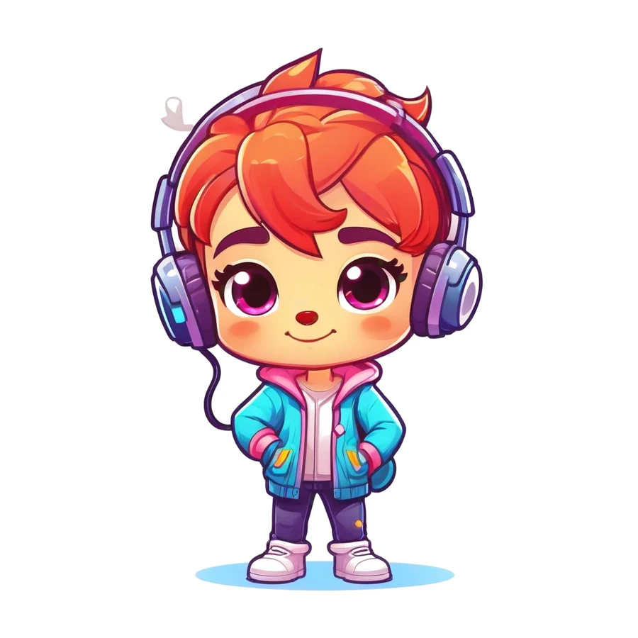
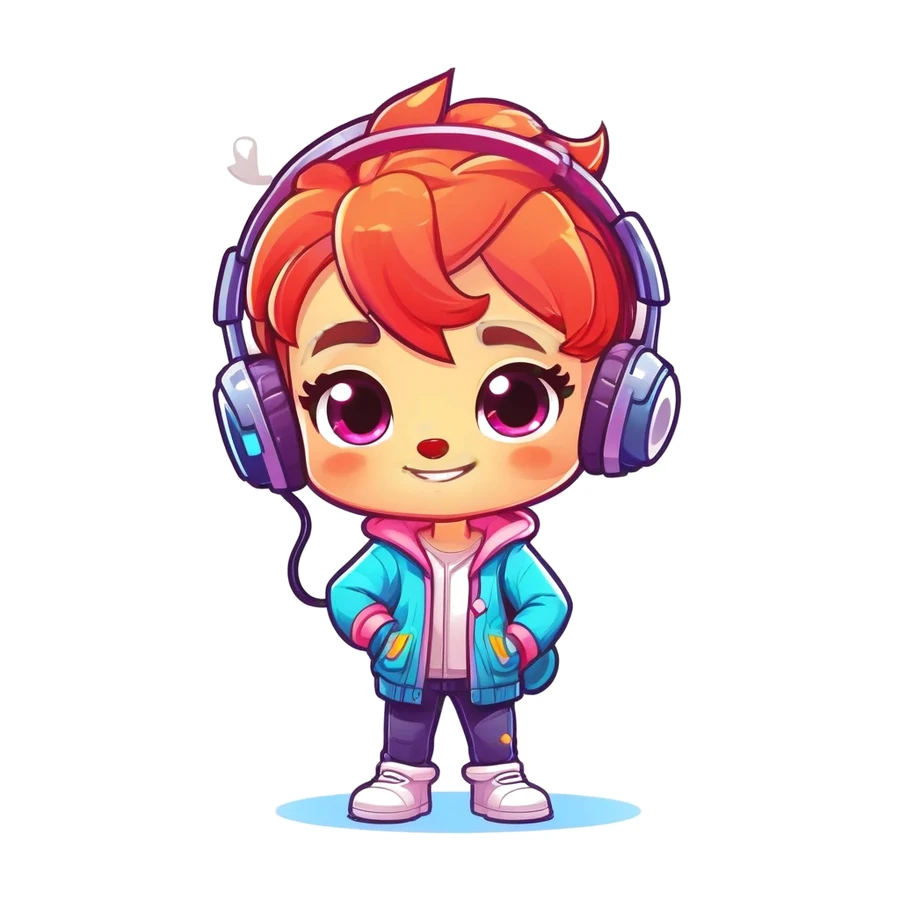
Each map compares an expression with the source image. Black means the pixel is identical; light marks a change. Only the eyebrows and mouth light up, so the character stays exactly on model.
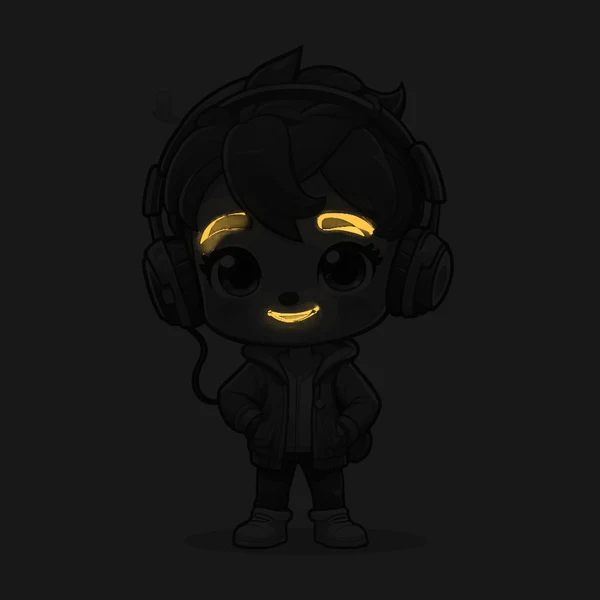
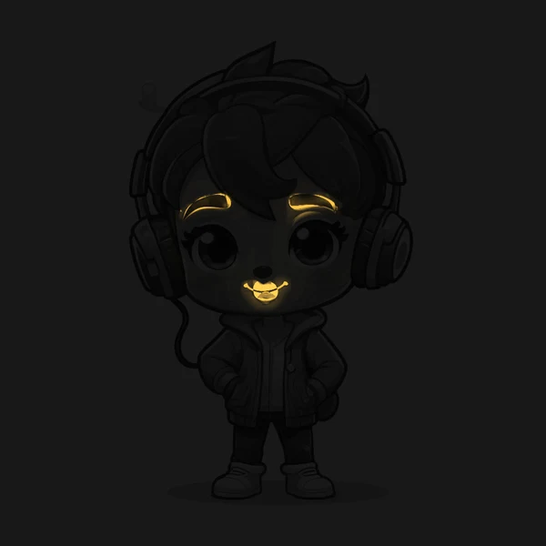
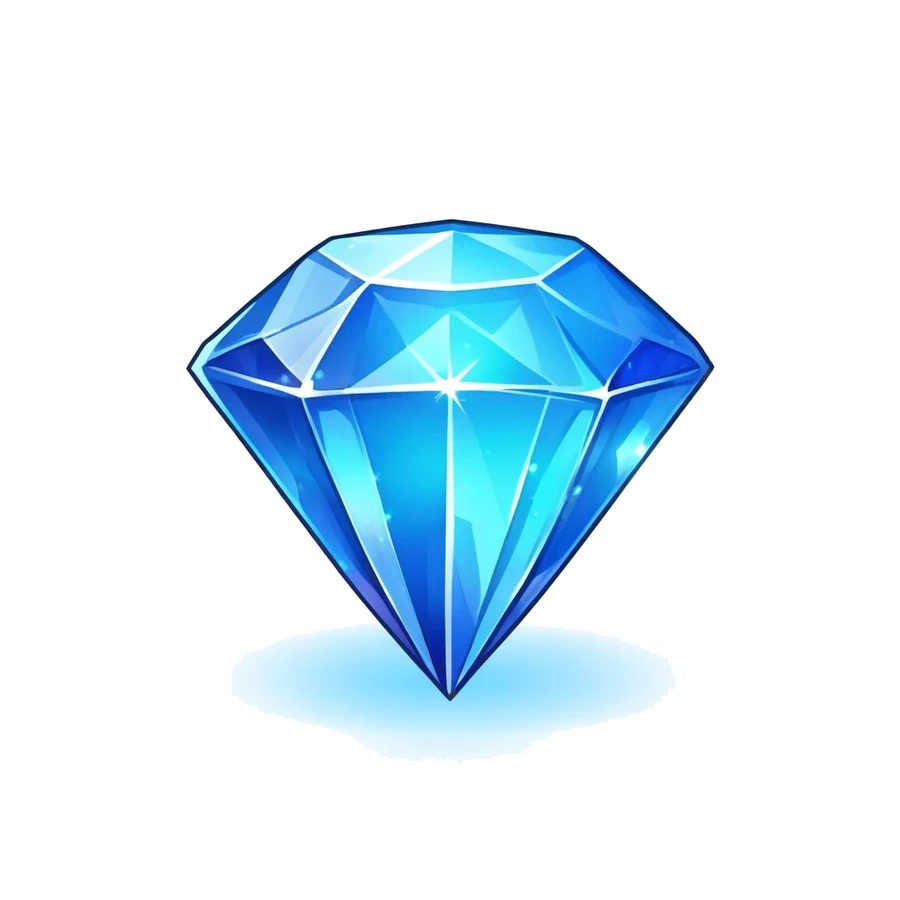
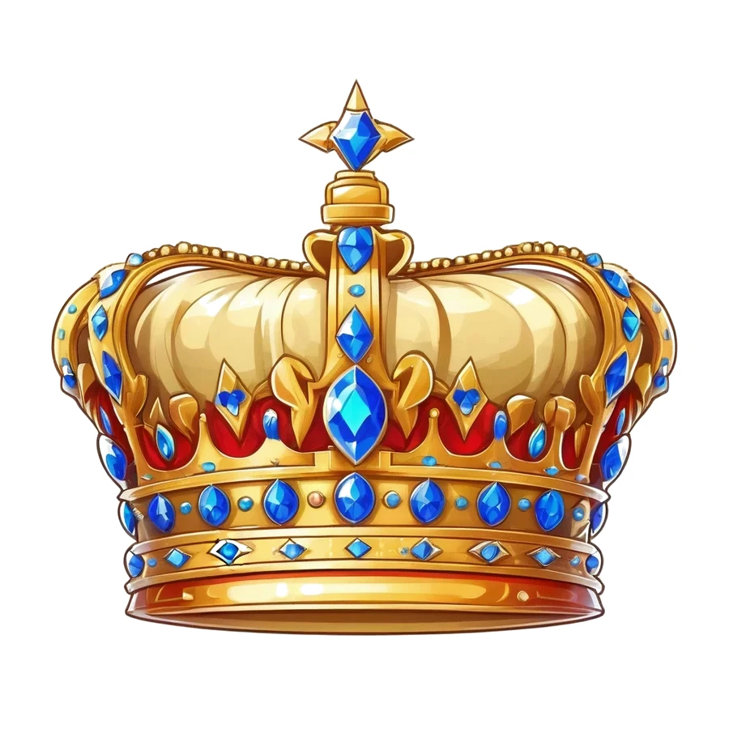
Assets are only useful if they work together. I placed the happy expression and the four icons on a mock reward popup to check that the set reads as one game: same line weight, same soft shading, same palette.
Each attempt fixed one problem and exposed the next. These are the real steps, in order.
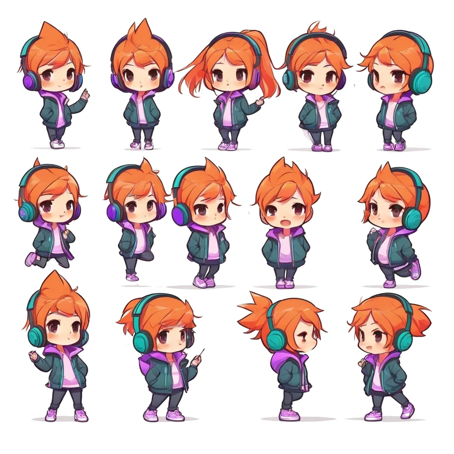
Asking for "the same character in multiple poses" gave a recognizable character, but details changed from pose to pose: headphone color switched between teal and purple, one pose grew a long ponytail, and the white sneakers came out purple.
A detailed prompt alone does not lock a design. Text describes a character; it does not remember one.
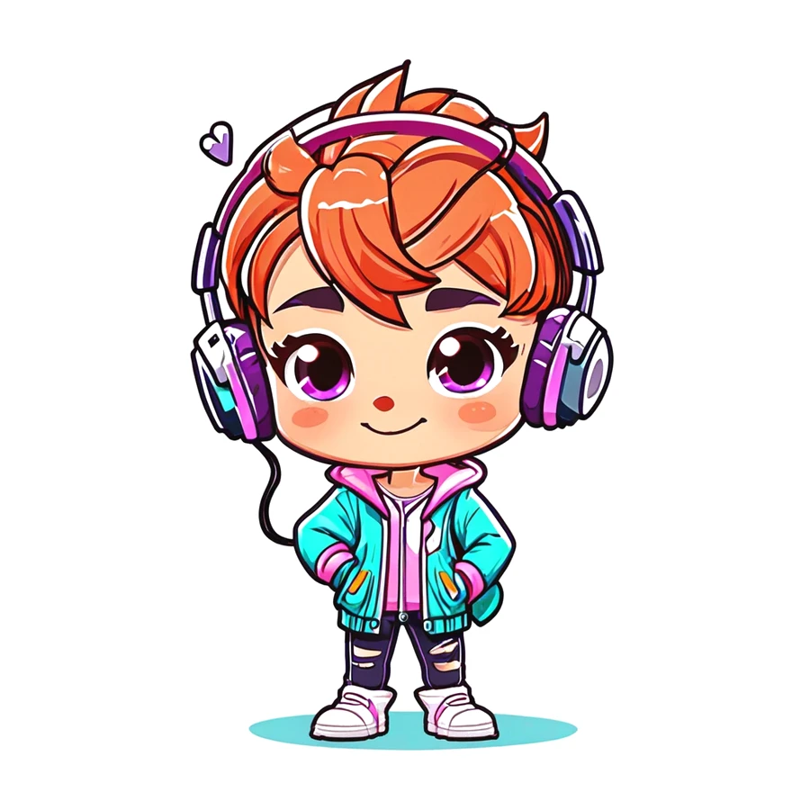
Starting from the approved image (img2img, denoise 0.6) kept the colors far better. But at 0.75 and above the outlines got heavier, the eyes turned purple and the jeans tore. Re-running img2img on its own output made it worse each time, like a photocopy of a photocopy.
Pick one approved image and generate every variant from it. Never chain img2img on generated output.
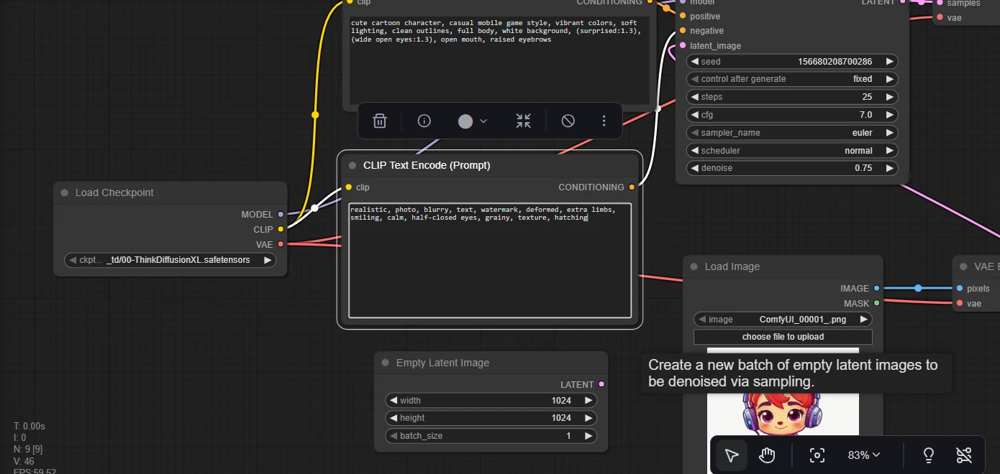
The grainy texture had a mechanical cause. The negative prompt node had been deleted, and the positive prompt had grown into several prompts pasted end to end. Rebuilding a clean positive prompt and a separate negative node brought the clean style back immediately.
Before every run, check that positive and negative come from two different nodes, and replace prompt text instead of appending to it.
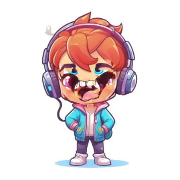
With the style stable, img2img at 0.6 barely changed the expression. Masking just the face and inpainting at denoise 0.85 changed the expression and left everything else untouched. Two last issues: weights of 1.5 on "gaping mouth" produced a monster, and the eye color changed, because the mask covered the eyes and the prompt never named their color. A second, eyes-only mask fixed it.
Keep weights at 1.2–1.3 and name everything inside the mask, including eye color. To fix one detail, mask only that detail.
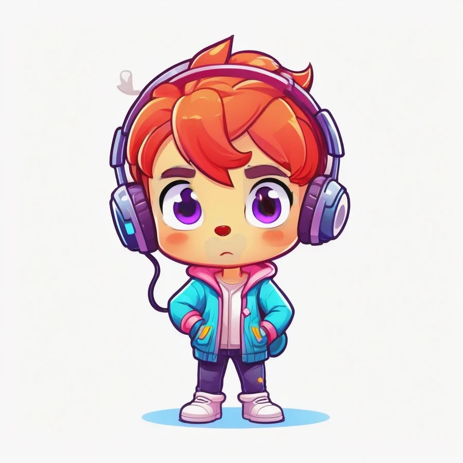
Side by side, the inpainted faces still did not match: whatever the mask covered, the model redrew, so the eyes came back a different color and the nose changed shape. The fix was to mask only the eyebrows and mouth, which carry the expression, and leave the eyes and nose outside the mask. An ImageCompositeMasked node then pastes the new region back onto the untouched source, and a color match removes the slight tone shift that VAE decoding adds. Where the mask grazed the eyes in the surprised run, I pasted the source eyes back the same way. That also taught me a limit: the sad face lost its sadness once the original, cheerful eyes went back in, because much of a sad expression lives in the eyes. I left it out of the set.
Don't mask anything that must stay the same. Angry was the exception: its brows drop into the eyes, so the mask has to touch them. That needs a second pass to restore the eyes.
One seed and one shared style phrase for every icon; only the object changes. That is what makes four separate generations look like one set.
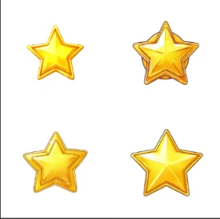
"Gold coin with a star" made the model fixate on "star". Weighting the main object, (round gold coin:1.4), and calling the star "small, embossed" fixed it.
To choose a model for a new asset type, I held everything constant and changed only the checkpoint. A game background is a good test: it shows how each model handles style, lighting and a busy composition.
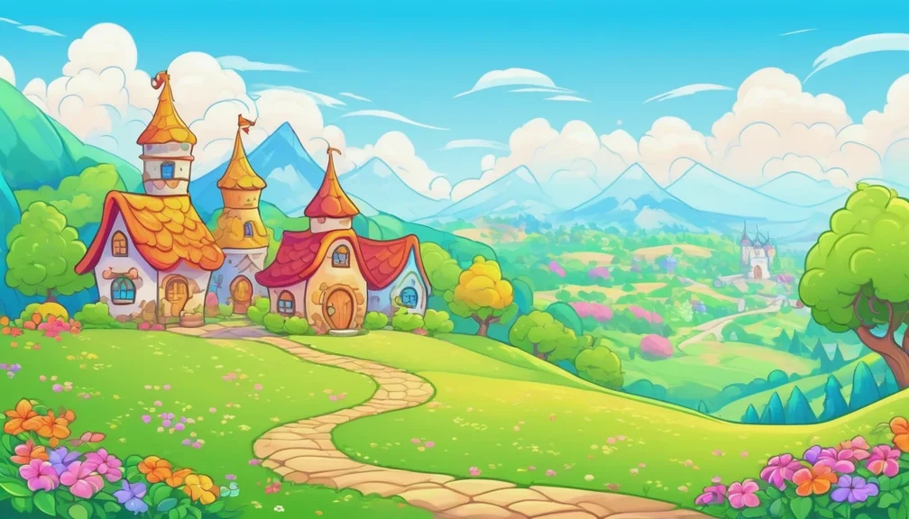
Flat colors and clean outlines, the closest match to the character and icons. Clear foreground and background, with room for UI on top.
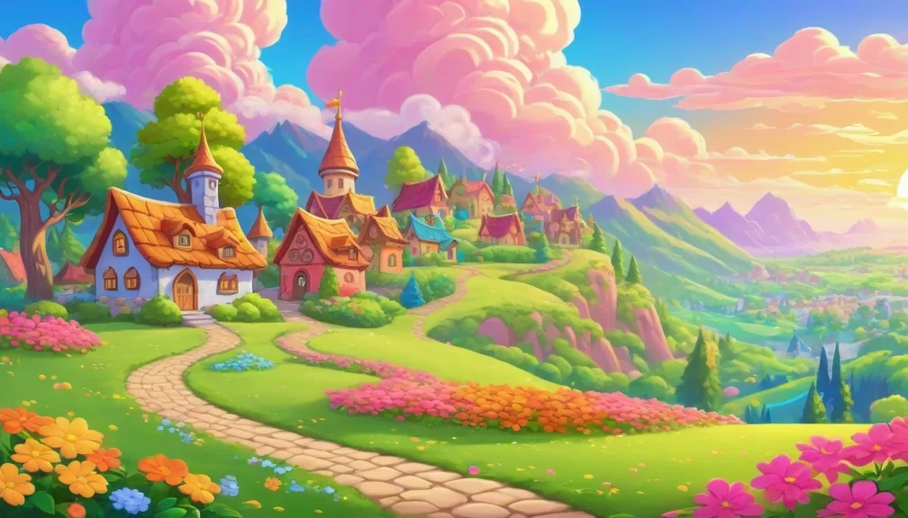
The most detail and the most convincing village, with real depth. As a game background it competes with the UI and the outlines get thin, so it would need simplifying.
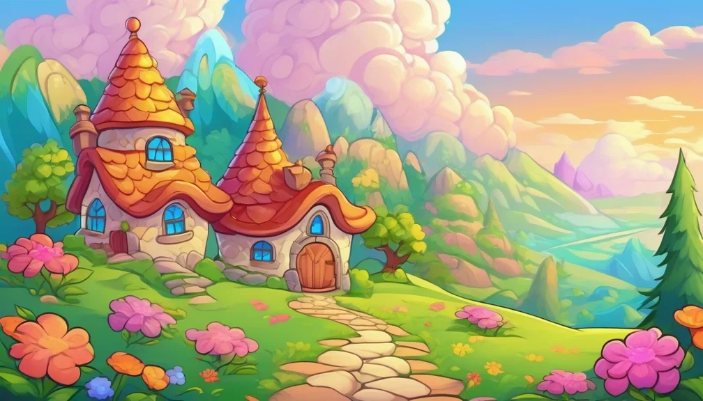
Heavier, near-3D shading and dramatic clouds. It reads as a generic illustration: the outlines are gone and the village shrinks to two houses.
For a casual-game pipeline I'd standardize on ThinkDiffusionXL so every asset shares one style, and use Juggernaut for detailed key art or concept exploration.
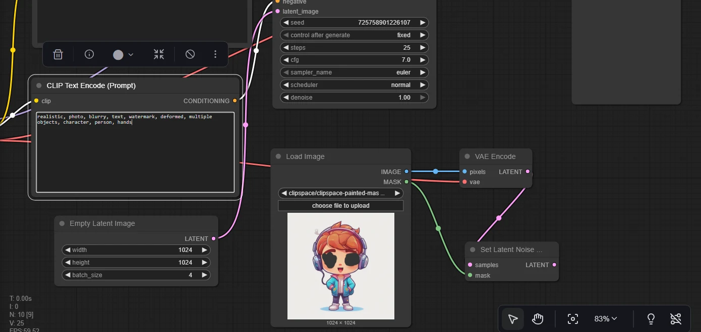
| Setting | What I saw | Use it for |
|---|---|---|
| img2img 0.6 | Colors and pose kept; expression barely moves | Small, global changes |
| img2img 0.75–0.8 | Mouth changes, but style starts to drift | Avoid for expression sets |
| inpaint 0.85 | Face changes, rest of the image untouched | Expressions |
| inpaint 0.9–0.95 | Face redrawn from scratch, no longer fits the body | Avoid |
| inpaint 0.6, small mask | Only the masked detail changes | Color fixes such as eye color |
| brows + mouth mask, 0.85 | Expression changes; eyes and nose stay identical | Final expression set |
What I would hand an artist on day one, written from the mistakes above.
Load the signed-off character and generate every variant from it.
They carry the expression. Leave eyes and nose outside the mask so they stay identical. Denoise 0.85, batch of 4.
Eye color, nose, mouth shape. Anything unnamed, the model invents.
A fixed seed plus the same prompt reproduces the image exactly.
It changes the style before it changes the face. Use prompt weights and a negative prompt.
Strong weights exaggerate: a surprised face becomes a scream.
Dice pips, fingers, repeated stones. Check them at full size before shipping.
Select all and replace. Old phrases left behind pull the image off style.
Use the approved images as a dataset so any artist can call the character by name, in any pose.
img2img and inpainting keep the pose. ControlNet would allow new poses without losing the design.
Feed an existing game asset as a style reference so new icons match the live art directly.